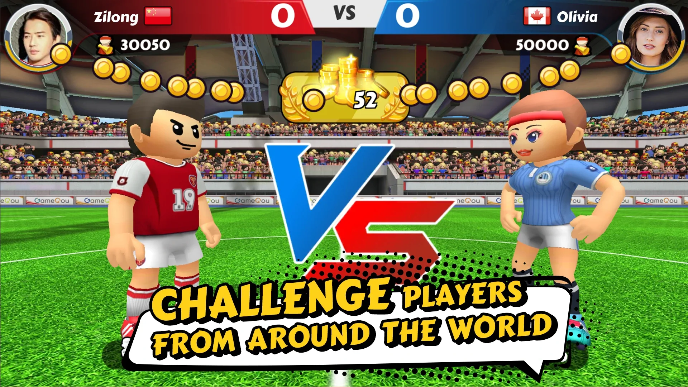
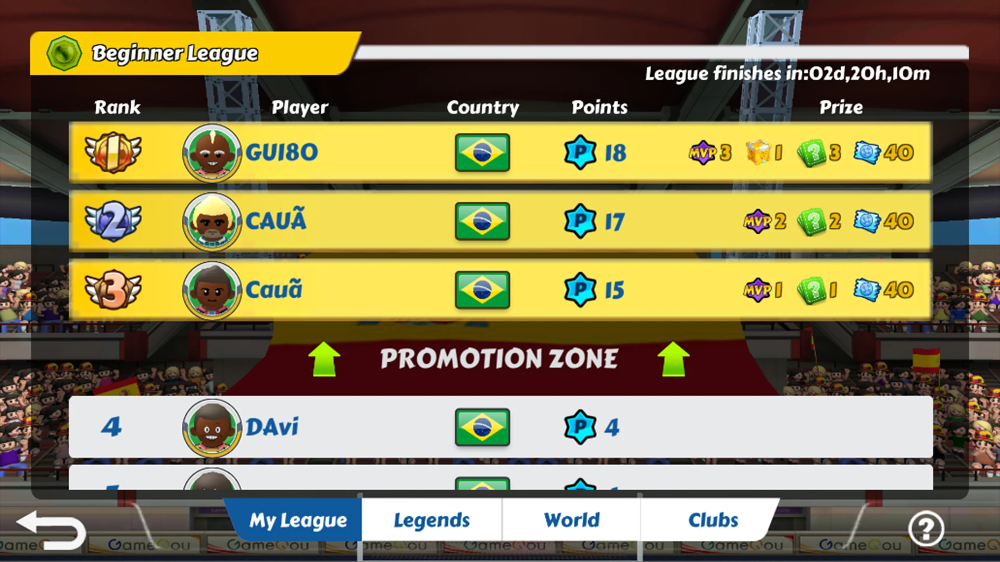
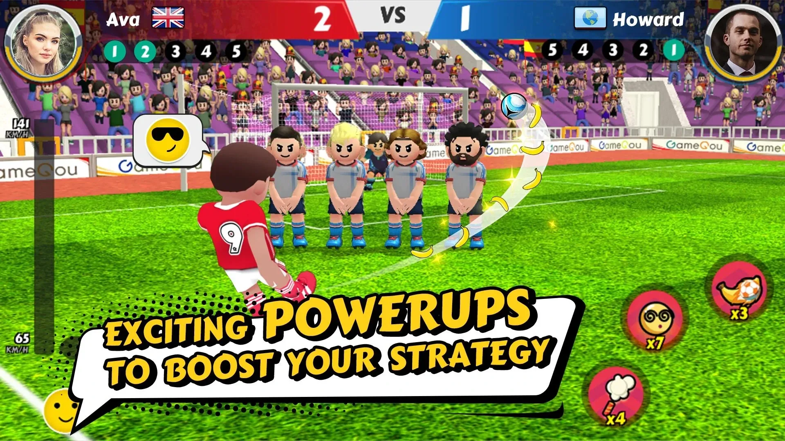
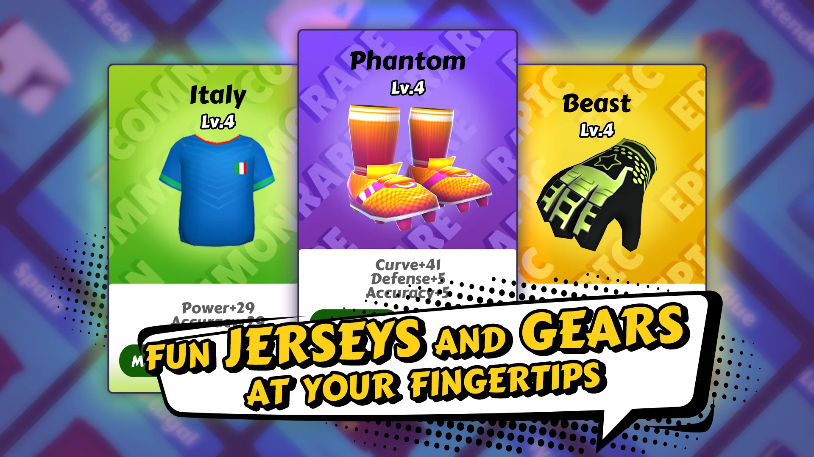
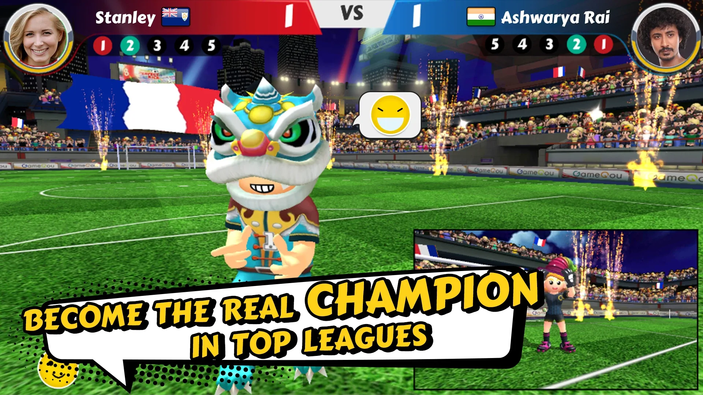
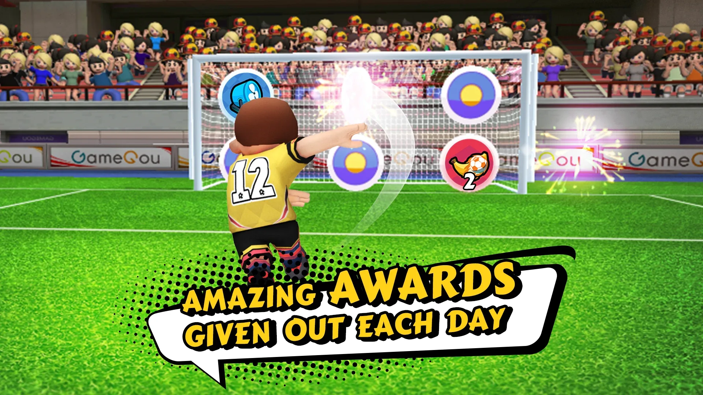

En bref
Perfect Kick 2 en bref
- 4.7★sur l'App Store
- 10M+téléchargements
- Matchs de moins de 3 minutes
- Gratuit
Google Play et App Store, octobre 2026. Note App Store sur près de 20 000 avis.







Jouez à ce jeu de coups francs amusant contre des joueurs du monde entier en moins de trois minutes. Améliorez votre stade, débloquez des équipements et des bonus uniques et faites-vous un nom au Panthéon des stars.
Perfect Kick 2 est la nouvelle évolution de la célèbre série de penalties de Gamegou. Plus rapide, plus déjanté et plus riche que jamais. Chaque match est un duel éclair en 1 contre 1 où vous alternez entre tireur et gardien.
Les matchs durent moins de 3 minutes. Attaquez puis défendez. Chaque seconde compte.
Tornado, Banana Kick, Runner et d'autres. Déclenchez-les au moment parfait.
Affrontez le monde dans des ligues, rejoignez des clubs avec vos amis et grimpez dans les divisions.
Choisissez parmi une foule de tenues et d'équipements extravagants pour vous démarquer sur le terrain.
Google Play et App Store, octobre 2026. Note App Store sur près de 20 000 avis.
Perfect Kick 2 est un jeu de football en ligne où vous affrontez de vrais joueurs dans des duels de coups francs rapides en 1 contre 1, en alternant entre tireur et gardien.
Moins de trois minutes, ce qui en fait un bon jeu de football pour les courtes pauses.
Oui. Vous pouvez rejoindre un club avec des amis, discuter avec d'autres joueurs et lancer des matchs amicaux.
Oui. Il est gratuit à télécharger sur Google Play et l'App Store. Il contient des publicités et des achats intégrés facultatifs.
Google Play le classe « Everyone » (tout public) et l'App Store 4+. L'App Store indique qu'il contient des coffres à butin (loot boxes).
Il est noté 4,7 sur 5 avec près de 20 000 avis sur l'App Store et 4,4 avec environ 170 000 avis sur Google Play (chiffres d'octobre 2026).
Parmi les bonus figurent Tornado, Banana Kick et Runner, entre autres.
Perfect Kick 2 est créé par Gamegou Limited, un développeur et éditeur de jeux de football mobiles dont les jeux totalisent plus de 300 millions de téléchargements.

Simulation complète de gestion de club de football. Recrutez des joueurs, réglez la tactique, suivez les matchs en 3D en direct et dirigez des sélections nationales.

Dessinez une ligne pour frapper le ballon. Plus de 50 millions de téléchargements. Jouez sur des plages, des toits, des paquebots et bien plus.

Un mélange inédit de football et de puzzle. Passez de la rue aux plus grands stades et devenez une véritable légende.